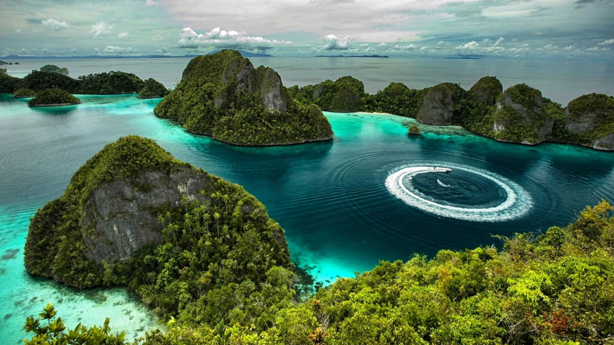

harta karun INDONESIA
keajaiban alam raja ampat
Selamat datang dalam petualangan melalui keindahan alam Kepulauan Raja Ampat! Di antara 1.500 pulau yang membentang luas di perairan Papua, terdapat sebuah surga tersembunyi yang menunggu untuk dijelajahi. Di sini, kita akan membahas bukan hanya keindahan Pulau Misool yang memukau.
Kepulauan Raja Ampat, dikenal sebagai salah satu surga tersembunyi di timur Indonesia, memikat hati para petualang dengan keindahan alamnya yang memukau. Dalam kisah ini, kami akan mengajak Anda untuk menjelajahi keempat pulau utama yang menjadi perhiasan tak ternilai di Kepulauan Raja Ampat: Waigeo, Misool, Salawati, dan Batanta.
4 pulau utama
Pulau terbesar di Kepulauan Raja Ampat, Waigeo, perpaduan sempurna antara kekayaan alam dan budaya lokal yang kaya. Dari hutan hujan yang lebat hingga pantai berpasir putih, Waigeo menawarkan petualangan alam yang tak terlupakan. Jelajahi gua-gua batu kapur yang menakjubkan, nikmati keindahan air terjun tersembunyi, dan saksikan matahari terbenam yang menakjubkan di pesisir pantainya. Anda juga dapat berinteraksi dengan masyarakat lokal yang ramah dan mempelajari kehidupan sehari-hari mereka.

Pulau Misool, terletak di bagian selatan Kepulauan Raja Ampat, adalah destinasi impian bagi para penyelam dan snorkeler. Terumbu karang yang subur, keanekaragaman hayati yang luar biasa, dan kejernihan air yang memukau menjadikannya sebagai salah satu tempat penyelaman terbaik di dunia. Selain itu, pulau ini juga menawarkan pemandangan alam yang memukau, mulai dari laguna biru hingga gua-gua karst yang spektakuler.
raja ampat
Pulau Salawati, terletak di sebelah barat Pulau Waigeo, menyuguhkan pesona alam yang memesona. Dari hutan bakau yang menjulang tinggi hingga pantai-pantai yang sepi, Salawati menawarkan ketenangan dan kedamaian bagi para pengunjungnya. Dan pulau ini belum terjamah oleh tangan manusia. Jangan lewatkan kesempatan untuk mengeksplorasi kehidupan bawah laut yang kaya di sekitar pulau ini dan menikmati matahari terbit yang memukau dari puncak bukit.
Pulau Batanta, terletak di sebelah selatan Pulau Waigeo, adalah surga tersembunyi bagi para pencinta alam. Dari hutan hujan yang tebal hingga air terjun yang menakjubkan, Batanta menawarkan petualangan alam yang tak terlupakan. Jelajahi kehidupan liar di hutan bakau, trekking melintasi lembah-lembah hijau, dan berenang di air terjun yang segar. Pulau ini juga menawarkan kesempatan untuk berinteraksi dengan masyarakat lokal dan belajar tentang budaya mereka yang kaya.
Kepulauan Raja Ampat, terletak di Papua, Indonesia, adalah surga tersembunyi dengan empat pulau utama: Waigeo, Misool, Salawati, dan Batanta. Waigeo menawarkan hutan hujan, Misool adalah surga bagi penyelam, Salawati memiliki hutan bakau, dan Batanta menawarkan petualangan alam. Ini adalah tempat yang memikat dengan keindahan alamnya yang spektakuler dan budaya lokal yang kaya.